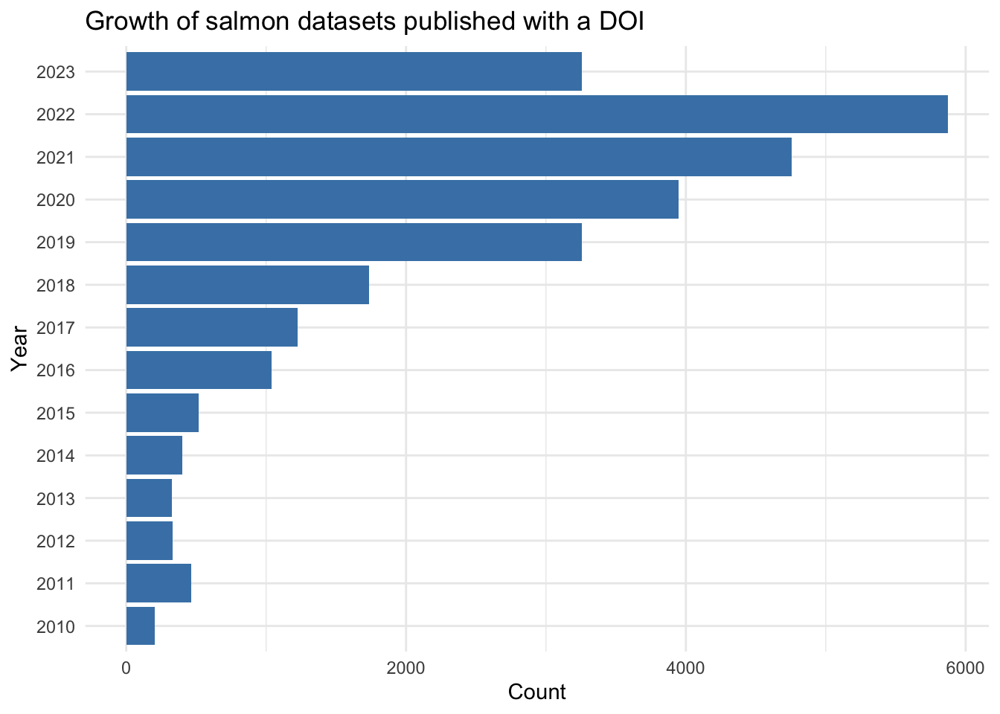

Communicate, assemble and coordinate extant data systems
Salmon
ecology
Author
Brett Johnnson
Published
May 30, 2023
Last updated: 2023-06-29
Introduction
There exists a mountain of data about salmon, their environment, and abundance yet we struggle to understand why or predict when certain populations of salmon decline. Part of the challenge is that salmon have a complicated life history where they are exposed to multiple environments throughout their lives. Some parts of their lives are easier to observe than others and some environments are more complex than others. The challenge is to figure out what observations have the most predictive power in each life phase, and then put all those data together to glean a complete and predictive history of the conditions encountered by specific salmon stocks.
However, because salmon cross arbitrary municipal, provincial, and national borders we lack a coordinated approach to aggregating data. Data often are collected using bespoke standards, stored locally, and not shared. Data management is not a trivial task. Therefore, any coordinated approach needs to be lightweight and flexible such that the barrier to adherence is surmountable by individual biologists and fall in line with the basic tenets of FAIR data.
Indeed, the key to mobilizing salmon data doesn’t lie in creating new technologies. Rather, it rests on effectively harnessing and integrating existing ones, ensuring they are user-friendly, supporting their broad adoption, and raising awareness about their use. It’s essential to remember that adhering to practical principles and modern best-practices that solve immediate problems will propel us further faster than being distracted by the allure of novel technologies or flashy platforms. Success hinges on assisting agencies to meet their data publishing mandates. To achieve this, we must address challenges faced by individual biologists and data managers one at a time, providing solutions rooted in practicality and principles that are underpinned by well-adopted global best-practices, and aligning these with existing national mandates. By sticking to the fundamentals outlined below, the salmon research community will be well-positioned to effectively manage, integrate, and harmonize the vast amount of data being produced to understand, predict and manage changes to salmon ecoystems.
Principles of Salmon Data Mobilization
Publish Data: Biologists need clear guidelines, tools and support to publish data. Institutions can provide clear mandates and resources to publish data. Academic journals can mandate data publication and citation for manuscripts(Cousijn et al. 2018).
Respect Indigenous Data Sovereignty. The rights of indigenous peoples and nations to govern the collection, ownership, and application of their own data is a critical step on the path to truth and reconciliation. Develop relationships with the nations on whose land you plan to work, practice community-engaged research(Sabatello et al. 2022), and apply the CARE principles(Carroll et al. 2020).
Publish Metadata Records: Metadata records can be published on platforms like Open Canada Data Portal, the Canadian Integrated Ocean Observing System, the Global Biodiversity Information Facility and generalist repositories such as Dryad, Figshare and Zenodo. So long as the metadata catalogue mints Digital Object Identifiers and uses modern technologies that allow metadata to be indexed and harvested, such as Science on Schema.org, or OAI-PMH then data can be harvested from a wide array of sources and integrated into a bespoke collection.
Use Persistent Identifiers: Using persistent Identifiers (PIDs) such as Digital Object Identifiers (DOIs) for datasets, Open Research and Contributor ID (ORCIDs) for individuals, and Research Organization Registry RORs for organizations can ensure precise, persistent and identification. Scientific Organizations can join the DataCite Canada Consortium if they wish to mint their own DOIs or rely on free services such as zenodo. Moreover, the nascent PID graph permits building custom applications or data visualizations that map research networks, connect researchers to projects, and summarize scholarly outputs from various organizations. There is massive infrastructure built to support bibliometrics, data discovery, linking, citation and data re-use using Digital Object Identifiers. This has to be a key component of salmon data mobilization.
Publish Protocols: The publication of protocols ensures uniformity in data collection and analysis. Several platforms exist to publish protocols for which a Digital Object Identifier can be used: Nature Portfolio’s Protocol Exchange, protocol.io, or simply using GitHub to host versions of protocols (DOIs can be assigned via the Zenodo Integration)
Adopt Domain-specific Data and Metadata Standards: Implementing domain-specific data and metadata standards, such as Darwin Core for biological data and Climate Forecast Conventions for oceanographic data, ensures uniformity and compatibility across data sets. For primary biodiversity data, the Canadian Journal of Aquatic Fisheries Sciences already strongly advocates for all species distribution records to be deposited in publicly accessible databases like the Global Biodiversity Information Facility (GBIF) (www.gbif.org), and the Ocean Biogeographic Information System (OBIS, http://www.iobis.org/) for marine biodiversity data.
Promote and Incentivize Data Publishing: Encourage the scientific community to publish their data by offering incentives, rewards, and institutional recognition.
Promote and Support Reproducible Workflows: Implement practices that ensure reproducibility of scientific workflows. This can be achieved by versioning data, code, and computational environments, and using workflow management systems that ensure the same computational procedure will yield the same result over time. This fosters trust, enables validation, and promotes the reuse of scientific workflows. Researchers should provide clear and comprehensive documentation of their workflows, including code, data, and tools used, to support reproducibility by others in the scientific community. Institutions should provide training on these emergent skills and best-practices.
Reuse and Cite Data: Promote the reuse of data, leveraging the vast amount of existing information for new research and reduce duplication of efforts. Any reused data should be properly cited using its digital object identifier (DOI). This practice will ensure due acknowledgement to the original data creators and promote transparency, ethical data usage, and credit for the data provider. Progressive academic journals are already taking this approach.
Who’s already publishing salmon data?
Let’s look through the datasets registered with DataCite that have the word salmon somewhere in their DOI’s metadata. To do this I will use DataCite’s REST API and the R package rdatacite which provides convenient functions for making API calls.
Code
library(rdatacite)library(tidyverse)library(plotly)# Initialize lists to store dataframes and metadataall_datasets <-list()all_meta <-list()# Fetch initial pagett_salmon_datasets <-dc_dois(query ="salmon")tt_providers <- tt_salmon_datasets[["meta"]][["providers"]]# tt_affiliations <- tt_salmon_datasets[["meta"]][["affiliations"]][["title"]]plotly::ggplotly(ggplot2::ggplot(tt_providers, aes(x =reorder(title, count), y = count)) +geom_bar(stat ="identity", fill ="steelblue") +coord_flip() +labs(x ="Publisher", y ="Count") +theme_minimal() +ggtitle("Top Ten Publishers of Salmon Datasets"))
Code
library(tidyverse)library(plotly)tt_affiliations <- tt_salmon_datasets[["meta"]][["affiliations"]]ggplot(tt_affiliations, aes(x =reorder(title, count), y = count)) +geom_bar(stat ="identity", fill ="steelblue") +coord_flip() +labs(x ="Institutions", y ="Count") +theme_minimal() +ggtitle("Top Ten Institutions Providing Salmon Datasets")
Code
library(tidyverse)library(plotly)years_published <- tt_salmon_datasets[["meta"]][["published"]]ggplot(years_published, ggplot2::aes(x = id, y = count))+geom_bar(stat ="identity", fill ="steelblue")+labs(x ="Year", y ="Count") +coord_flip() +theme_minimal() +ggtitle("Growth of salmon datasets published with a DOI")

Conclusion
The process of aggregating and understanding salmon data has historically been fraught with difficulties due to the complicated life history of the species and the geographical and political boundaries that often hamper a coordinated approach. The need of the hour is a simplified, flexible, and coordinated strategy that is easy to implement and adheres to the FAIR principles. The effective mobilization of salmon data does not hinge on the creation of new technologies. Rather, the emphasis should be on the active communication, coordination, and implementation of existing technologies, ensuring they are easy to use and their use is mandated. The ten strategic points delineated here present a holistic roadmap towards this objective. With concerted efforts and strategic implementation of these proposed strategies, salmon science may be able to enter the fourth scientific paradigm—data intensive scientific discoveries.
References
Carroll, Stephanie Russo, Ibrahim Garba, Oscar L. Figueroa-Rodríguez, Jarita Holbrook, Raymond Lovett, Simeon Materechera, Mark Parsons, et al. 2020. “The CARE Principles for Indigenous Data Governance.”Data Science Journal 19 (November): 43. https://doi.org/10.5334/dsj-2020-043.
Cousijn, Helena, Amye Kenall, Emma Ganley, Melissa Harrison, David Kernohan, Thomas Lemberger, Fiona Murphy, et al. 2018. “A Data Citation Roadmap for Scientific Publishers.”Scientific Data 5 (1). https://doi.org/10.1038/sdata.2018.259.
Sabatello, Maya, Daphne O. Martschenko, Mildred K. Cho, and Kyle B. Brothers. 2022. “Data Sharing and Community-Engaged Research.”Science 378 (6616): 141–43. https://doi.org/10.1126/science.abq6851.
Source Code
---title: How do we mobilize salmon data?author: Brett Johnnsondate: 2023-05-30categories: [Salmon, ecology]description: 'Communicate, assemble and coordinate extant data systems'archives: - 2023/05toc: falseformat: html: code-fold: true code-tools: truebibliography: references.bib---Last updated: `r Sys.Date()`# IntroductionThere exists a mountain of data about salmon, their environment, and abundance yet we struggle to understand why or predict when certain populations of salmon decline. Part of the challenge is that salmon have a complicated life history where they are exposed to multiple environments throughout their lives. Some parts of their lives are easier to observe than others and some environments are more complex than others. The challenge is to figure out what observations have the most predictive power in each life phase, and then put all those data together to glean a complete and predictive history of the conditions encountered by specific salmon stocks.However, because salmon cross arbitrary municipal, provincial, and national borders we lack a coordinated approach to aggregating data. Data often are collected using bespoke standards, stored locally, and not shared. Data management is not a trivial task. Therefore, any coordinated approach needs to be lightweight and flexible such that the barrier to adherence is surmountable by individual biologists and fall in line with the basic tenets of FAIR data.Indeed, the key to mobilizing salmon data doesn't lie in creating new technologies. Rather, it rests on effectively harnessing and integrating existing ones, ensuring they are user-friendly, supporting their broad adoption, and raising awareness about their use. It's essential to remember that adhering to practical principles and modern best-practices that solve immediate problems will propel us further faster than being distracted by the allure of novel technologies or flashy platforms. Success hinges on assisting agencies to meet their data publishing mandates. To achieve this, we must address challenges faced by individual biologists and data managers one at a time, providing solutions rooted in practicality and principles that are underpinned by well-adopted global best-practices, and aligning these with existing national mandates. By sticking to the fundamentals outlined below, the salmon research community will be well-positioned to effectively manage, integrate, and harmonize the vast amount of data being produced to understand, predict and manage changes to salmon ecosystems.# Principles of Salmon Data Mobilization1. **Publish Data**: Biologists need clear guidelines, tools and support to publish data. Institutions can provide clear mandates and resources to publish data. Academic journals can mandate data publication and citation for manuscripts[@cousijn2018].2. **Respect Indigenous Data Sovereignty.** The rights of indigenous peoples and nations to govern the collection, ownership, and application of their own data is a critical step on the path to truth and reconciliation. Develop relationships with the nations on whose land you plan to work, practice community-engaged research[@sabatello2022], and apply the CARE principles[@carroll2020].3. **Create a Data Management Plan (DMP)**: A robust DMP is crucial for the effective management of data. Fisheries and Oceans Canada already prescribes this requirement ([**https://www.dfo-mpo.gc.ca/about-notre-sujet/publications/science/datapolicy-politiquedonnees/index-eng.html#6-5**](https://www.dfo-mpo.gc.ca/about-notre-sujet/publications/science/datapolicy-politiquedonnees/index-eng.html#6-5)). The Government of Canada's Tri-agency Research Data Management Policy and the Canadian Association of Research Libraries support [DMP Assistant tool](https://assistant.portagenetwork.ca/about_us) can aid in the creation of DMPs.4. **Publish Metadata Records**: Metadata records can be published on platforms like Open Canada Data Portal, the Canadian Integrated Ocean Observing System, the Global Biodiversity Information Facility and generalist repositories such as Dryad, Figshare and Zenodo. So long as the metadata catalogue mints Digital Object Identifiers and uses modern technologies that allow metadata to be indexed and harvested, such as [Science on Schema.org](https://doi.org/10.5281/zenodo.7872383), or [OAI-PMH](https://www.openarchives.org/pmh/) then data can be harvested from a wide array of sources and integrated into a bespoke collection.5. **Use Persistent Identifiers**: Using persistent Identifiers (PIDs) such as Digital Object Identifiers (DOIs) for datasets, [Open Research and Contributor ID (ORCIDs)](https://orcid.org/) for individuals, and [Research Organization Registry RORs](https://ror.org/) for organizations can ensure precise, persistent and identification. Scientific Organizations can join the [DataCite Canada Consortium](https://www.crkn-rcdr.ca/en/datacite-canada-consortium) if they wish to mint their own DOIs or rely on free services such as [zenodo](https://zenodo.org/). Moreover, the nascent [PID graph](https://doi.org/10.1016/j.patter.2020.100180) permits building custom applications or data visualizations that map research networks, connect researchers to projects, and summarize scholarly outputs from various organizations. There is massive infrastructure built to support bibliometrics, data discovery, linking, citation and data re-use using Digital Object Identifiers. This has to be a key component of salmon data mobilization.6. **Publish Protocols**: The publication of protocols ensures uniformity in data collection and analysis. Several platforms exist to publish protocols for which a Digital Object Identifier can be used: [Nature Portfolio's Protocol Exchange](https://protocolexchange.researchsquare.com/), [protocol.io](https://www.protocols.io/plans/academia), or simply using GitHub to host versions of protocols (DOIs can be assigned via the [Zenodo Integration](https://docs.github.com/en/repositories/archiving-a-github-repository/referencing-and-citing-content))7. **Adopt Domain-specific Data and Metadata Standards**: Implementing domain-specific data and metadata standards, such as Darwin Core for biological data and Climate Forecast Conventions for oceanographic data, ensures uniformity and compatibility across data sets. For primary biodiversity data, the Canadian Journal of Aquatic Fisheries Sciences *already* strongly advocates for all species distribution records to be deposited in publicly accessible databases like the Global Biodiversity Information Facility (GBIF) ([**www.gbif.org**](http://www.gbif.org/)), and the Ocean Biogeographic Information System (OBIS, [**http://www.iobis.org/**](http://www.iobis.org/)) for marine biodiversity data.8. **Promote and Incentivize Data Publishing**: Encourage the scientific community to publish their data by offering incentives, rewards, and institutional recognition.9. **Promote and Support Reproducible Workflows**: Implement practices that ensure reproducibility of scientific workflows. This can be achieved by versioning data, code, and computational environments, and using workflow management systems that ensure the same computational procedure will yield the same result over time. This fosters trust, enables validation, and promotes the reuse of scientific workflows. Researchers should provide clear and comprehensive documentation of their workflows, including code, data, and tools used, to support reproducibility by others in the scientific community. Institutions should provide training on these emergent skills and best-practices.10. **Reuse and Cite Data**: Promote the reuse of data, leveraging the vast amount of existing information for new research and reduce duplication of efforts. Any reused data should be properly cited using its digital object identifier (DOI). This practice will ensure due acknowledgement to the original data creators and promote transparency, ethical data usage, and credit for the data provider. Progressive academic journals are already taking [this approach](https://www.nature.com/articles/sdata2018259).## Who's already publishing salmon data?Let's look through the datasets registered with DataCite that have the word salmon somewhere in their DOI's metadata. To do this I will use DataCite's REST API and the R package `rdatacite` which provides convenient functions for making API calls.```{r, warning = FALSE, message=FALSE}library(rdatacite)library(tidyverse)library(plotly)# Fetch top ten providers of datasets with the word salmon somewhere in the DOI metadatatt_salmon_datasets <-dc_dois(query ="salmon")tt_providers <- tt_salmon_datasets[["meta"]][["providers"]]plotly::ggplotly(ggplot2::ggplot(tt_providers, aes(x =reorder(title, count), y = count)) +geom_bar(stat ="identity", fill ="steelblue") +coord_flip() +labs(x ="Publisher", y ="Count") +theme_minimal() +ggtitle("Top Ten Publishers of Salmon Datasets")) ``````{r, warning = FALSE, message=FALSE}library(tidyverse)library(plotly)tt_affiliations <- tt_salmon_datasets[["meta"]][["affiliations"]]ggplot(tt_affiliations, aes(x =reorder(title, count), y = count)) +geom_bar(stat ="identity", fill ="steelblue") +coord_flip() +labs(x ="Institutions", y ="Count") +theme_minimal() +ggtitle("Top Ten Institutions Providing Salmon Datasets")``````{r, warning = FALSE, message=FALSE}library(tidyverse)library(plotly)years_published <- tt_salmon_datasets[["meta"]][["published"]]ggplot(years_published, ggplot2::aes(x = id, y = count))+geom_bar(stat ="identity", fill ="steelblue")+labs(x ="Year", y ="Count") +coord_flip() +theme_minimal() +ggtitle("Growth of salmon datasets published with a DOI")```# ConclusionThe process of aggregating and understanding salmon data has historically been fraught with difficulties due to the complicated life history of the species and the geographical and political boundaries that often hamper a coordinated approach. The need of the hour is a simplified, flexible, and coordinated strategy that is easy to implement and adheres to the FAIR principles. The effective mobilization of salmon data does not hinge on the creation of new technologies. Rather, the emphasis should be on the active communication, coordination, and implementation of existing technologies, ensuring they are easy to use and their use is mandated. The ten strategic points delineated here present a holistic roadmap towards this objective. With concerted efforts and strategic implementation of these proposed strategies, salmon science may be able to enter the fourth scientific paradigm---data intensive scientific discoveries.### References